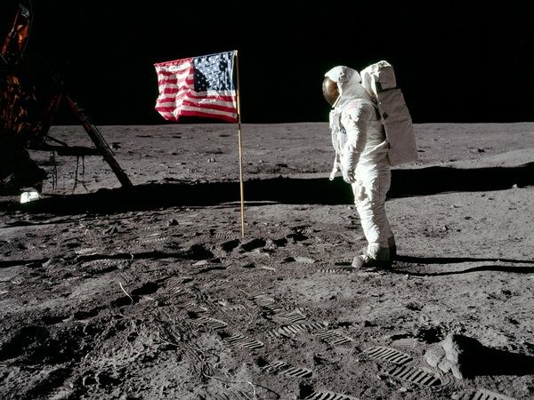

Our first Conspiracy regards something we see every day, the moon. The Moon, according to some,it contains a hidden world. If you watch the video below, one man conspires that the moon holds many government or alien secrets. This man believes that the inhabitants of the moon cast a hologram over their city in order to cover up their existence to the Earth. Many conspiracists that study the moon each night claim that there are inconsistancies with its appearance from night to night. Some claim that the clouds move behind the moon suggesting that what we are looking at is something inside Earth's atmosphere, while others claim that there could be a holographic line that moves across the moon as seen in the video.
This brings up the question, "What about the Moon Landing?" Well this brings us into a more commonly known conspiracy that the United States Moon Landing in 1969 was staged. This is a conspiracy believed by so many that NASA has even acknowledged it and gave their reasoning as to why their claims are false. Evidence against the moon landing include:

Here is one of the most famous pictures of the moon landing, where Buzz Aldrin plants the American Flag into the Moon's surface. The main question that arises from this picture is why the flag appears to be waving when there is no wind on the Moon? NASA's counter to that claim is that the lack of gravity allowed the flag to stick out.

This is a picture of the Earth taken from the Moon however it is obviously noticeable that there is an absence of stars. NASA explains that it was due to the poor quality of the camera. However conspiracists believe that the excuse that NASA gave was to cover up that they would not be able to properly map out the stars visible from that viewpoint.

Another piece of evidence in this photo is that there is no crater created from the impact of the spacecraft. NASA has contradicted this with the claim that the lack of gravity and the Moon being solid rock makes it unlikely for a crater to be made from something as small as a spacecraft.
So what do you think? Do you Believe it or not? Leave your comments or suggestions in the forum section! Next weeks conspiracy will revolve around the mysteries of Hitler's suicide.
Photo Credits: Listverse.com